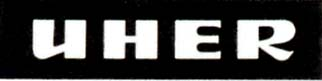
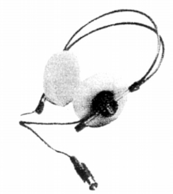
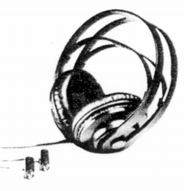
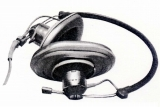
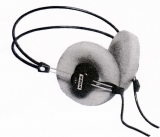
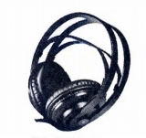

UHER （ウーヘル）
ドイツのテープデッキ等のメーカー。小型で可搬性に優れたオープンリールやカセットデッキを作っていた。現在の状況は不明。当時のデッキは今も時折中古機器を扱う店やオークションに登場する。同時代の国産機に比べれば高額だったが、それでもナグラやステラボックスほどではなく、取材用としてはバランスの取れた機体で、また耐久性にも定評があり、古い事件をあつかった記録映像にしばしば登場する。
ヘッドフォンについては、デッキの付属品としての性格が強く、特定のデッキ用とされる機種が多い。また同社のデッキが少なくとも1970年代まではマイク端子を含めすべての接続コネクターがDIN規格の為、ヘッドフォンの端子もDIN規格であり、変換コードを用意しなければ一般には使えない。
当時の代理店は75年頃はバルコムトレーディング、77年頃はサンスイ、79年頃からは三洋電機貿易だった。


（パートナーとなるレコーダーに対応して、同社の機種間でも接続端子が違う。左のW675はCR-210用で、DIN5ピンのシングルプラグ。右のW774は4200IC用で左右別のDINプラグ。対応機種から考えれば、W674はW774、W775はW675と同じタイプのプラグの可能性が高い。）
現在確認できる製品は3系統ある。一番古いと思われるのがW671a、W673であり、AKGのK160やMBのMB K66などと同系統のデザインの密閉型モデルである。

(W671a)次がW674,W675でゼンハイザーのHD-414をイメージさせるスポンジイヤパッドのオープンエア型モデルである。イヤパッドの色は鮮やかなイエロー（W675のページに掲載）であるが、同時代のHD-414(オリジナルのHD-414及びHD-414Xの初期型）はブルーなど、イエロー以外のパッドを使用していた。

(W675)最後がW774,W775でかなり独創的なデザインのヘッドバンド。

＊SONYのウォークマン登場以前には、ウーヘルのポータブル・カセットデッキとヘッドフォンで旅先で音楽を楽しんでいたこともあったようだ。ジャズドラマーの守新治（もりしんじ）さんのサイトに、かつて写真が掲載されていた。〈現在では、サービスが停止したようです。）
＊UHER
（ウーヘル）をはじめとしたポータブル型のテープレコーダーを多数載せているサイトはこちら→ MEGA Scoop
さん
こちらのサイトの「et cetera」のページにはUHER
Z61というヘッドフォンが登場しています。おたずねしたところ、ドイツから直接入手されたので国内での流通はわからないそうです。